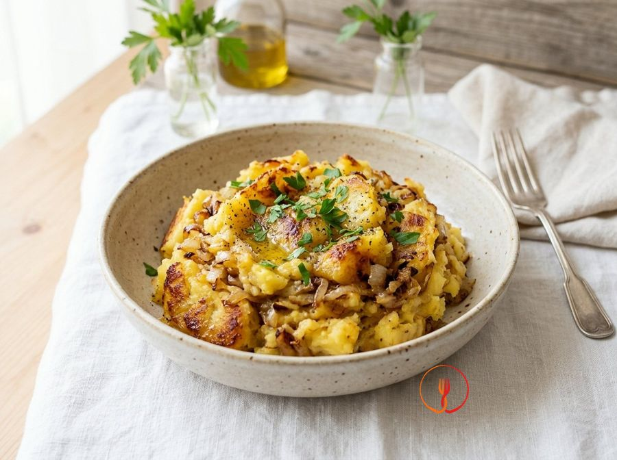

Patate in Tecia alla Triestina Semplificate
Una versione economica della classica ricetta triestina dove le patate vengono schiacciate e rosolate a lungo con abbondante cipolla fino a creare una crosticina deliziosa.
Ingredienti
- Patate a pasta gialla800 g
- Cipolle dorate grandi2 pz
- Brodo vegetale (o acqua)100 ml
- Olio extravergine d'oliva30 ml
Allergeni
Nessuno dei 14 allergeni principali tra gli ingredienti.
Procedimento
- Lava le patate e lessale intere con la buccia in acqua salata per circa 25 minuti o finché non saranno tenere ma ancora sode.
- Scolale, lasciale intiepidire quanto basta per sbucciarle e poi tagliale a fette spesse o pezzi irregolari.
- In una padella antiaderente (la 'tecia'), scalda l'olio e aggiungi le cipolle affettate sottilmente; falle stufare a fuoco basso finché non diventano scure e dolci.
- Aggiungi le patate nella padella e schiacciarle leggermente con una forchetta o un cucchiaio di legno mentre le mescoli alle cipolle.
- Versa un po' di brodo o acqua per inumidire e continua la cottura a fuoco medio-alto senza mescolare troppo spesso.
- Premi bene le patate sul fondo della padella per farle rosolare: deve formarsi una crosticina dorata e saporita.
- Gira le patate a blocchi per farle dorare anche dall'altro lato, aggiungendo altro liquido se vedi che tendono a bruciare troppo velocemente.
- Il contorno è pronto quando le patate sono diventate quasi una massa unica, cremosa all'interno e croccante all'esterno.
Valori nutrizionali (stima)
| Per porzione (232 g) | Per 100 g | |
|---|---|---|
| Energia | 879 kJ / 210.0 kcal | 378.9 kJ / 90.5 kcal |
| Proteine | 4.0 g | 1.7 g |
| Carboidrati | 32.0 g | 13.8 g |
| di cui zuccheri | – g | – g |
| Grassi | 8.0 g | 3.4 g |
| di cui saturi | – g | – g |
| Fibre | – g | – g |
| Sale | – g | – g |
Valori stimati con l'AI su dati medi CREA / USDA: sono indicativi e non sostituiscono il parere di un medico o di un nutrizionista.
Apri la ricetta nell'app per la lista della spesa, le schede ingredienti e i negozi vicini.